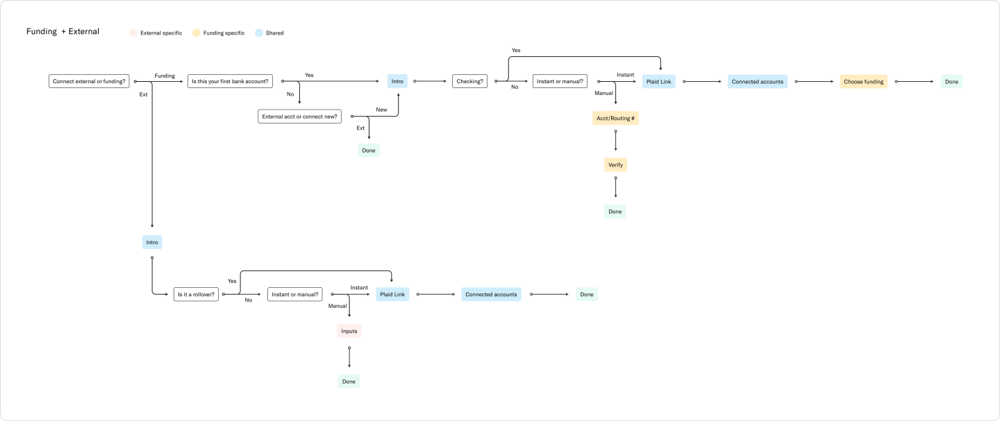
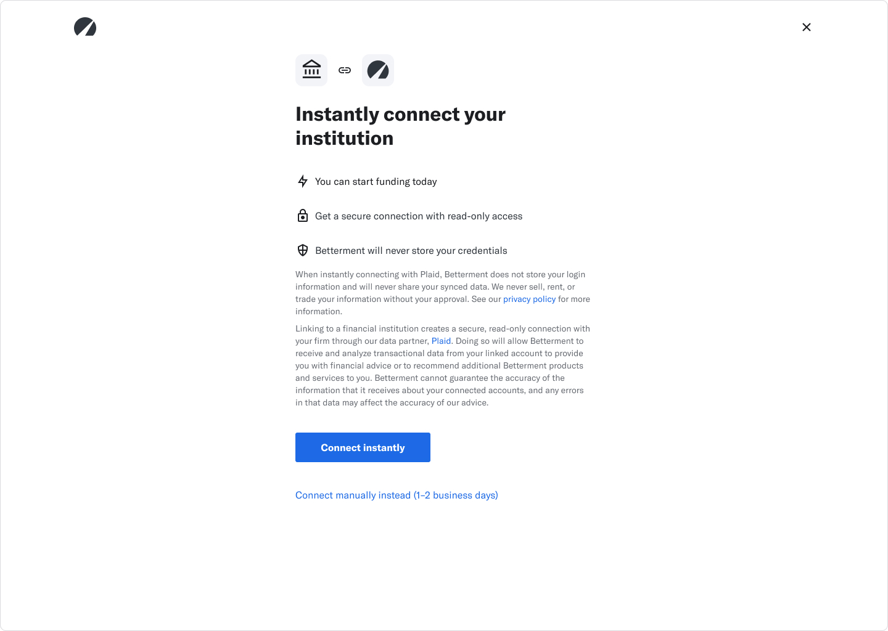
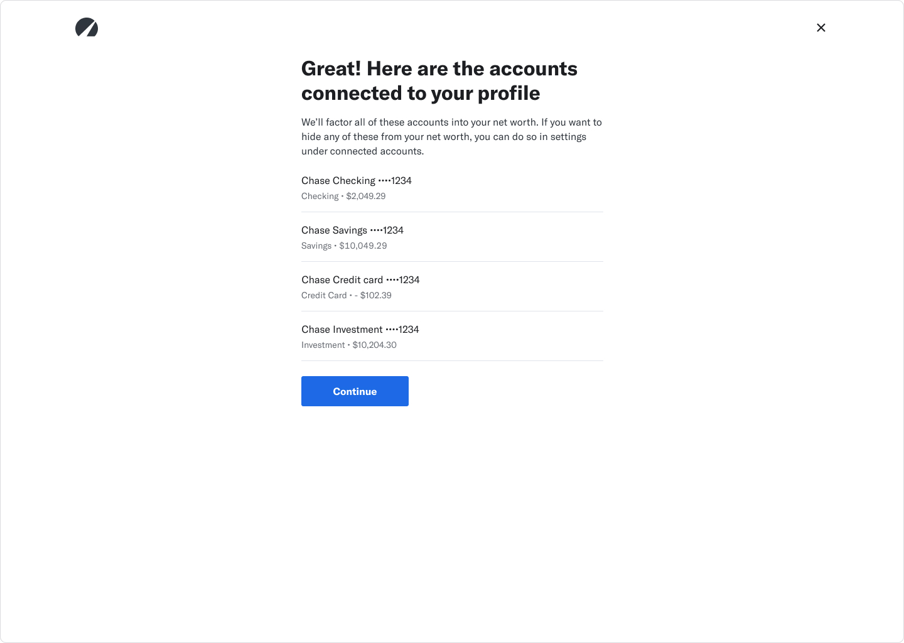
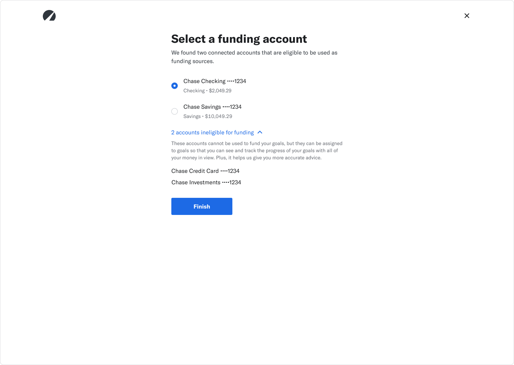

Betterment, 2021
Betterment's bank aggregator, Quovo, was acquired by Plaid so, first and foremost, we had to make the great migration to Plaid. This transition gave us a great opportunity to visually update the bank connecting experience, clarify the process and benefits, and become more transparent.
Sneak peek of the Plaid experience.
There were a couple issues we wanted to tackle:
This was the experience with Quovo.
I want to note that the first two issues were resolved just by using Plaid! So I'll be going over the last two issues in this case study.
Based on our current experience and where we want to go with the Plaid updates, I created a flow to figure out the steps at a higher level. We have different logic based on where the customer enters the flow so I wanted to make sure I captured that, seeing what steps are similar and where they differ.
Lots of lines and arrows!
From here, I started designing the main steps: intro, connected accounts, and selecting a funding account.
Before we get to the design iterations, I wanted to mention some early user testing. I started testing my designs really early to get some general feedback and comprehension. I wasn't sure if this was a common flow that people were used to on other financial apps.
Looking back now, the information in this iteration wasn't super clear. But I learned!
I quickly learned that people were used to connecting their banks to financial apps. Most of the user testers had no issues getting through it. Some did have some qualms about giving their financial data, but they were able to find the manual option pretty easily.
The intro went through quite a few iterations. For a bit of background, here are the types of connections you can make:
We wanted to prioritize the instant connection through Plaid because we were able to get the most accurate data and give a holistic view of your finances. We didn't want to discourage a manual connection because some times that's the only option for a bank, but we didn't want to have it on the same level as instant.
We wanted to prioritize the instant connection through Plaid because we were able to get the most accurate data and give a holistic view of your finances.
I ended up with this direction. This captured the main benefits of an instant connection. And the manual connection was right below as a tertiary link if you needed it. This solved our issue of clearing up the manual account option. Hooray!
The final intro screen.
After connecting on Plaid, we show you a summary of the accounts you connected. Here are some iterations I did based on customer feedback on the existing Quovo experience.
I ended up splitting the steps so we show you the connected accounts first and then ask which one you want to use as a funding account. This resolved our funding accounts clarity issue!
This makes sure the customer understands what accounts they connected and what data we have.
This step was able to clarify which accounts you can use as your funding account.
This was a pretty huge project. Our team worked on this for months to make the transition smooth for our customers. There were some tech constraints and challenges, but I was able to work with our lead engineer to figure out a solution that works conceptually and technically. I'm pretty proud of how the experience ended up and the impact we had on our customers behind the scenes! I was also very excited to have updated our flows with current components and styles.
There were some tech constraints and challenges, but I was able to work with our lead engineer to figure out a solution that works conceptually and technically.